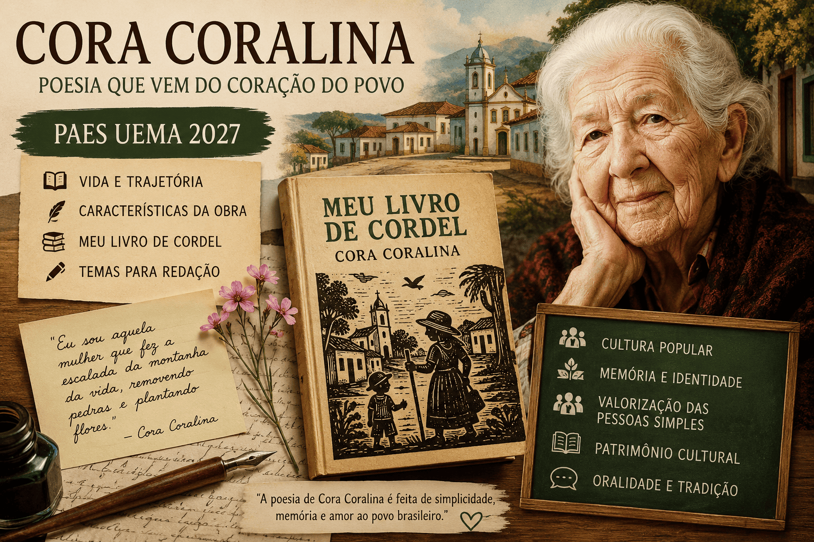

Cora Coralina: Vida, Obra e Importância para o PAES UEMA 2027
Cora Coralina foi uma das mais importantes escritoras da literatura brasileira e ocupa posição de destaque entre os autores que valorizam a cultura popular, a memória e a identidade nacional. Sua obra continua sendo amplamente estudada em escolas, vestibulares e universidades, especialmente após a inclusão de Meu Livro de Cordel entre as obras obrigatórias do PAES UEMA 2027.

Conhecer sua trajetória, suas principais obras e os temas recorrentes de sua produção literária é fundamental para os candidatos que desejam obter um bom desempenho tanto nas questões de literatura quanto na redação do vestibular.
Quem foi Cora Coralina?
Cora Coralina foi o pseudônimo literário de Ana Lins dos Guimarães Peixoto Bretas, uma das escritoras mais importantes da literatura brasileira do século XX. Nascida em 20 de agosto de 1889, na Cidade de Goiás, antiga Vila Boa de Goiás, viveu em um período marcado por profundas transformações sociais, políticas e culturais no Brasil.
Filha de uma tradicional família goiana, Cora teve acesso limitado à educação formal. Frequentou a escola apenas durante os primeiros anos da infância, mas desenvolveu desde cedo uma grande paixão pela leitura e pela escrita. Ainda adolescente, começou a produzir poemas e textos para jornais locais, demonstrando um talento literário que seria reconhecido apenas décadas mais tarde.
Em uma época em que as mulheres enfrentavam diversas restrições sociais e culturais, seguir uma carreira literária não era uma tarefa simples. Além dos desafios impostos pela condição feminina, Cora Coralina viveu em uma região distante dos grandes centros culturais do país, o que dificultava ainda mais a divulgação de sua produção intelectual.
Em 1911, casou-se com o advogado Cantídio Tolentino de Bretas e mudou-se para o estado de São Paulo. Durante muitos anos viveu em diferentes cidades paulistas, dedicando-se à criação dos filhos e às responsabilidades familiares. Nesse período, continuou escrevendo de forma discreta, registrando memórias, observações sobre a vida cotidiana e reflexões sobre a sociedade brasileira.
Após a morte do marido, retornou à sua cidade natal, onde passou a viver na histórica Casa Velha da Ponte, localizada às margens do Rio Vermelho. Para complementar sua renda, trabalhou como doceira, produzindo doces artesanais que se tornaram conhecidos na região. Essa experiência simples e próxima da realidade popular influenciou profundamente sua visão de mundo e sua produção literária.
Diferentemente de muitos escritores que alcançam notoriedade ainda na juventude, o reconhecimento de Cora Coralina ocorreu de forma tardia. Somente em 1965, aos 75 anos de idade, publicou seu primeiro livro, Poemas dos Becos de Goiás e Estórias Mais. A obra chamou a atenção por sua originalidade, sensibilidade e valorização das experiências das pessoas comuns.
Sua literatura conquistou leitores por retratar com autenticidade a vida do interior brasileiro, as tradições populares, os costumes regionais e as memórias de uma sociedade em transformação. Em seus textos, personagens simples como lavadeiras, quitandeiras, trabalhadores rurais, crianças e idosos ganham protagonismo, revelando a riqueza humana presente no cotidiano.
O reconhecimento nacional foi impulsionado pelo apoio de importantes intelectuais brasileiros. Entre eles destacou-se Carlos Drummond de Andrade, que elogiou publicamente sua obra e contribuiu para ampliar sua visibilidade no cenário literário nacional. A partir desse momento, Cora Coralina passou a ser reconhecida como uma das vozes mais autênticas da literatura brasileira.
Suas obras abordam temas como memória, identidade cultural, cultura popular, ancestralidade, papel da mulher na sociedade, desigualdades sociais e valorização dos saberes tradicionais. Sua escrita caracteriza-se pela linguagem simples, próxima da oralidade, mas profundamente reflexiva e poética.
Cora Coralina faleceu em 10 de abril de 1985, aos 95 anos, deixando um importante legado para a literatura nacional. Atualmente, sua obra continua sendo estudada em escolas, universidades e vestibulares de todo o país, sendo considerada referência quando se discutem cultura popular, patrimônio cultural brasileiro e valorização das experiências humanas.
Para os candidatos do PAES UEMA 2027, conhecer a trajetória de Cora Coralina é fundamental não apenas para compreender a obra Meu Livro de Cordel, mas também para identificar os valores, as experiências e as reflexões que permeiam sua produção literária. Sua história de vida demonstra como a literatura pode nascer das vivências mais simples e transformar-se em patrimônio cultural de alcance nacional.
Características da Obra de Cora Coralina
A obra de Cora Coralina ocupa um lugar singular na literatura brasileira por unir simplicidade linguística, profundidade temática e forte compromisso com a valorização da cultura popular. Seus poemas, contos e narrativas são construídos a partir das experiências do cotidiano, das memórias pessoais e da observação sensível das pessoas comuns.
Diferentemente de autores que buscavam uma linguagem rebuscada ou excessivamente formal, Cora Coralina aproximou a literatura da vida real. Sua escrita revela um profundo respeito pelas tradições populares, pelos saberes transmitidos entre gerações e pelas histórias frequentemente ignoradas pelos registros oficiais da história.
Essas características tornam sua produção literária extremamente relevante para a compreensão da identidade cultural brasileira e ajudam a explicar por que sua obra continua sendo estudada em escolas, universidades e vestibulares como o PAES UEMA 2027.
Linguagem simples e acessível
Uma das características mais marcantes da escrita de Cora Coralina é a utilização de uma linguagem simples, direta e próxima da oralidade. Seus textos reproduzem expressões populares, modos de falar característicos do interior do Brasil e construções linguísticas inspiradas na fala cotidiana.
Essa escolha estética não representa falta de sofisticação literária. Pelo contrário, demonstra a intenção da autora de aproximar a literatura das pessoas comuns, tornando seus textos acessíveis a leitores de diferentes níveis de escolaridade.
A simplicidade de sua linguagem contribui para a criação de uma atmosfera acolhedora e autêntica, permitindo que o leitor se reconheça nas histórias, personagens e situações retratadas.
Valorização da cultura popular
A cultura popular constitui um dos pilares da produção literária de Cora Coralina. Em suas obras, a autora registra costumes, tradições, festas religiosas, crenças, lendas, receitas, modos de vida e saberes transmitidos oralmente ao longo das gerações.
Ao valorizar esses elementos, a escritora contribui para a preservação da memória cultural brasileira e demonstra que a cultura de um povo não se encontra apenas nos grandes acontecimentos históricos, mas também nas práticas cotidianas e nas experiências das comunidades locais.
Essa valorização aparece de forma particularmente intensa em Meu Livro de Cordel, obra obrigatória do PAES UEMA 2027, que dialoga diretamente com a tradição da literatura popular e com a riqueza cultural do povo brasileiro.
Memória e identidade
A memória desempenha papel fundamental na construção da obra de Cora Coralina. Muitas de suas narrativas e poemas são construídos a partir de lembranças da infância, da juventude e da vida na Cidade de Goiás.
No entanto, suas memórias ultrapassam a dimensão individual. Ao compartilhar experiências pessoais, a autora recupera aspectos da história coletiva de sua comunidade e do próprio Brasil.
Dessa forma, sua literatura contribui para a construção da identidade cultural brasileira, mostrando como as vivências individuais podem refletir processos históricos e sociais mais amplos.
A relação entre memória e identidade é um dos aspectos mais importantes para a interpretação de sua obra e frequentemente aparece em análises literárias e discussões acadêmicas.
Representação dos grupos marginalizados
Outro aspecto relevante da produção de Cora Coralina é a valorização de personagens que tradicionalmente ocupam posições secundárias na literatura e na história oficial.
Em seus textos aparecem lavadeiras, doceiras, trabalhadores rurais, quitandeiras, mulheres pobres, idosos, crianças e outros grupos frequentemente invisibilizados pela sociedade.
Ao dar voz a essas pessoas, a autora promove uma literatura mais inclusiva e humanizada, reconhecendo a importância de indivíduos que raramente recebem destaque nos grandes relatos históricos.
Essa perspectiva social amplia o alcance de sua obra e permite reflexões sobre desigualdade, exclusão social, dignidade humana e valorização das experiências populares.
Exaltação da simplicidade
Cora Coralina transforma acontecimentos aparentemente simples em matéria literária de grande valor poético. Objetos cotidianos, ruas antigas, casas simples, doces caseiros, conversas entre vizinhos e lembranças familiares tornam-se fontes de inspiração para sua escrita.
Sua literatura demonstra que a beleza e a profundidade podem estar presentes nos pequenos acontecimentos da vida, contrariando a ideia de que apenas grandes eventos merecem ser registrados ou celebrados.
Essa exaltação da simplicidade constitui uma marca registrada de sua obra e contribui para a criação de textos carregados de sensibilidade e humanidade.
Preservação da memória histórica
Além de registrar experiências pessoais, Cora Coralina também atua como uma importante guardiã da memória histórica de sua região. Suas obras preservam informações sobre modos de vida, costumes e transformações ocorridas ao longo do tempo na Cidade de Goiás.
Por meio de sua literatura, muitos aspectos da cultura goiana foram documentados e transmitidos para as gerações futuras, transformando seus textos em importantes registros históricos e culturais.
Influência da oralidade
A oralidade é outro elemento fundamental na construção de sua escrita. Muitas passagens de suas obras reproduzem ritmos, expressões e formas narrativas típicas da tradição oral brasileira.
Essa característica aproxima seus textos dos contadores de histórias, dos poetas populares e dos cordelistas, fortalecendo a conexão entre literatura escrita e cultura oral.
Em Meu Livro de Cordel, essa influência torna-se ainda mais evidente, contribuindo para a construção de uma obra profundamente ligada às raízes culturais brasileiras.
Valorização da figura feminina
Embora não tenha participado diretamente dos movimentos feministas de sua época, Cora Coralina construiu uma obra que valoriza a experiência das mulheres e evidencia seus desafios cotidianos.
Muitas de suas personagens femininas são retratadas como figuras fortes, trabalhadoras e resilientes, capazes de enfrentar adversidades e contribuir significativamente para suas famílias e comunidades.
Sua própria trajetória de vida, marcada pela superação de obstáculos e pelo reconhecimento literário conquistado na terceira idade, tornou-se um símbolo de perseverança e autonomia feminina.
Universalidade dos temas humanos
Apesar de retratar uma realidade local específica, a obra de Cora Coralina aborda questões universais que continuam atuais em diferentes contextos históricos e culturais.
Temas como amor, saudade, envelhecimento, memória, identidade, pertencimento, trabalho, esperança e dignidade humana aparecem com frequência em seus textos, permitindo que leitores de diferentes gerações se identifiquem com suas reflexões.
Essa capacidade de transformar experiências locais em questões universais explica a permanência de sua obra entre as mais importantes da literatura brasileira e justifica sua relevância para os estudantes que se preparam para o PAES UEMA 2027.
Principais Obras de Cora Coralina
A produção literária de Cora Coralina não é extensa quando comparada à de outros escritores brasileiros, mas possui enorme relevância cultural, histórica e literária. Seus livros preservam memórias, registram tradições populares e valorizam personagens que raramente aparecem como protagonistas na literatura tradicional.
Grande parte de sua obra foi publicada quando a autora já se encontrava na terceira idade, fato que torna sua trajetória ainda mais singular. Seus textos refletem décadas de observação da vida cotidiana, das transformações sociais e das experiências humanas acumuladas ao longo de sua existência.
As obras de Cora Coralina são marcadas pela linguagem simples, pela valorização da oralidade, pela preservação da memória coletiva e pelo profundo vínculo com a cultura popular brasileira. Entre seus livros mais importantes destacam-se:
Poemas dos Becos de Goiás e Estórias Mais (1965)
Publicado quando a autora tinha 75 anos, este foi o primeiro livro de Cora Coralina e representa um marco em sua trajetória literária. A obra reúne poemas e narrativas inspirados na Cidade de Goiás, local onde a escritora nasceu e viveu boa parte de sua vida.
Os textos retratam ruas, becos, casarões, personagens populares e acontecimentos cotidianos que fazem parte da memória cultural da região. Por meio dessas representações, a autora preserva aspectos históricos e sociais que poderiam ser esquecidos com o passar do tempo.
O livro também apresenta temas que se tornariam recorrentes em sua produção, como a valorização das pessoas simples, a importância das tradições populares, a força da memória e a construção da identidade cultural brasileira.
Considerada uma das obras mais importantes da literatura regionalista brasileira, a publicação contribuiu para o reconhecimento nacional de Cora Coralina e consolidou sua posição entre os grandes nomes da literatura brasileira.
Meu Livro de Cordel (1976)
Meu Livro de Cordel ocupa posição de destaque entre as obras da autora e possui importância especial para os estudantes que se preparam para o PAES UEMA 2027, pois integra a lista oficial de leituras obrigatórias do vestibular.
A obra estabelece diálogo com a tradição da literatura de cordel e com diversas manifestações da cultura popular brasileira. Seus poemas apresentam forte influência da oralidade, reproduzindo ritmos, expressões e formas narrativas características das tradições populares.
Ao longo dos textos, Cora Coralina aborda temas como memória, identidade cultural, pertencimento, ancestralidade, valorização dos saberes tradicionais e preservação do patrimônio cultural.
Um dos aspectos mais relevantes da obra é sua capacidade de transformar experiências aparentemente simples em reflexões profundas sobre a condição humana e a importância das raízes culturais na formação da sociedade.
Para os candidatos do PAES UEMA 2027, a leitura de Meu Livro de Cordel é fundamental não apenas para responder às questões literárias da prova, mas também para ampliar o repertório sociocultural utilizado na redação.
Vintém de Cobre: Meias Confissões de Aninha (1983)
Nesta obra, Cora Coralina apresenta textos marcados por forte caráter autobiográfico. O livro reúne lembranças, reflexões e experiências que ajudam o leitor a compreender melhor sua trajetória pessoal e intelectual.
O título faz referência à personagem "Aninha", apelido pelo qual a autora era conhecida durante a infância. Por meio dessa figura, a escritora revisita momentos importantes de sua vida, explorando emoções, sentimentos e memórias que contribuíram para a formação de sua identidade.
O livro destaca a importância da memória como instrumento de preservação da história individual e coletiva. Ao compartilhar suas experiências, Cora Coralina também registra aspectos da vida social, cultural e econômica do interior brasileiro ao longo do século XX.
A obra é frequentemente estudada por pesquisadores interessados em compreender as relações entre autobiografia, memória e literatura.
Estórias da Casa Velha da Ponte (1985)
Publicada no ano de seu falecimento, esta obra reúne narrativas inspiradas na famosa Casa Velha da Ponte, residência histórica onde Cora Coralina viveu durante parte de sua vida na Cidade de Goiás.
A casa funciona como símbolo da memória, da tradição e da permanência dos valores culturais ao longo do tempo. A partir desse espaço, a autora constrói histórias que retratam personagens, costumes e acontecimentos ligados ao cotidiano da região.
O livro apresenta uma rica combinação entre memória, história e imaginação literária, permitindo ao leitor conhecer aspectos da vida social e cultural do interior brasileiro.
Além de seu valor literário, a obra possui importante dimensão documental, pois registra elementos culturais que ajudam a compreender a formação histórica da sociedade goiana e brasileira.
Outras Obras Relevantes
Embora os livros anteriores sejam os mais conhecidos, a produção de Cora Coralina inclui outras publicações importantes que contribuem para a compreensão de seu universo literário.
- Tesouro da Casa Velha;
- O Prato Azul-Pombinho;
- As Cocadas;
- Os Meninos Verdes;
- A Moeda de Ouro que um Pato Engoliu.
Essas obras mantêm características presentes em toda a produção da autora, como a valorização da cultura popular, a preservação da memória coletiva, o resgate das tradições brasileiras e a representação das pessoas simples como protagonistas de suas próprias histórias.
A Importância das Obras de Cora Coralina para o PAES UEMA 2027
O estudo das obras de Cora Coralina permite compreender diversos aspectos da literatura brasileira, especialmente aqueles relacionados à cultura popular, à oralidade, à memória e à identidade cultural.
No contexto do PAES UEMA 2027, a leitura de Meu Livro de Cordel torna-se indispensável, mas conhecer as demais obras da autora também contribui para uma interpretação mais profunda de sua produção literária.
Além de auxiliar nas questões específicas de literatura, os temas abordados por Cora Coralina podem servir como repertório sociocultural para a redação, especialmente em propostas relacionadas à preservação cultural, patrimônio histórico, diversidade cultural, cidadania, memória coletiva e valorização dos saberes tradicionais.
Meu Livro de Cordel e o PAES UEMA 2027
Entre as obras selecionadas pela Universidade Estadual do Maranhão para o Processo Seletivo de Acesso à Educação Superior (PAES) 2027, Meu Livro de Cordel, de Cora Coralina, ocupa posição de grande relevância. A inclusão do livro na lista oficial demonstra o interesse da banca em valorizar obras que promovem reflexões sobre cultura, identidade, memória e patrimônio cultural brasileiro.
Para os candidatos que pretendem ingressar na UEMA, o estudo dessa obra é indispensável. A leitura não deve se limitar à compreensão superficial dos poemas, mas envolver também a análise dos temas centrais, dos recursos linguísticos utilizados pela autora e das relações que podem ser estabelecidas entre o texto literário e questões contemporâneas.
A escolha de Meu Livro de Cordel pela banca do PAES reforça a importância da literatura como instrumento de compreensão da realidade social e cultural brasileira. Por meio da obra, os estudantes têm contato com discussões relacionadas à preservação da memória coletiva, à valorização das tradições populares e à construção da identidade cultural.
Além disso, os temas abordados por Cora Coralina dialogam diretamente com diversas problemáticas sociais que podem aparecer tanto nas questões objetivas quanto na prova de redação. Por essa razão, compreender a obra em profundidade pode representar uma importante vantagem para os candidatos.
Outro aspecto relevante é que a literatura de Cora Coralina oferece um rico repertório sociocultural para a produção textual. Questões relacionadas à cultura popular, diversidade cultural, patrimônio histórico, cidadania e memória social podem ser enriquecidas por referências extraídas de seus poemas e reflexões.
Nesse sentido, o estudo de Meu Livro de Cordel deve ser realizado de forma integrada aos demais conteúdos cobrados pelo vestibular, permitindo ao estudante desenvolver uma visão mais ampla sobre os temas presentes na obra e suas possíveis conexões com a realidade contemporânea.
Sobre a Obra Meu Livro de Cordel
Publicado originalmente em 1976, Meu Livro de Cordel é uma das obras mais representativas da produção literária de Cora Coralina. O livro reúne poemas que dialogam com a tradição da literatura popular brasileira, especialmente com os elementos característicos da poesia oral e da literatura de cordel.
Embora não siga rigorosamente todos os padrões formais do cordel nordestino, a obra incorpora aspectos fundamentais dessa tradição, como a linguagem acessível, a musicalidade dos versos, a valorização das experiências populares e a forte presença da oralidade.
Ao longo dos poemas, a autora constrói um verdadeiro mosaico da cultura brasileira, registrando memórias, costumes, crenças, histórias e saberes que fazem parte da formação cultural do país. Sua escrita transforma experiências aparentemente simples em importantes reflexões sobre identidade, pertencimento e valorização das raízes históricas.
A obra evidencia o compromisso de Cora Coralina com a preservação da memória coletiva. Muitas das situações retratadas remetem a práticas culturais transmitidas de geração em geração, revelando a importância dos conhecimentos populares para a construção da identidade social.
Outro elemento marcante é a presença constante de personagens comuns. Trabalhadores, mulheres, idosos, crianças e moradores do interior brasileiro aparecem como protagonistas dos poemas, demonstrando a preocupação da autora em valorizar indivíduos frequentemente esquecidos pelos grandes relatos históricos.
A linguagem utilizada em Meu Livro de Cordel é simples, mas profundamente expressiva. Cora Coralina utiliza palavras do cotidiano, expressões populares e estruturas próximas da fala oral para criar uma comunicação direta com o leitor. Essa característica aproxima a literatura das experiências reais das pessoas e amplia o alcance de sua mensagem.
A memória também ocupa papel central na obra. Em diversos momentos, a autora revisita acontecimentos do passado para refletir sobre transformações sociais, mudanças culturais e permanências históricas. Dessa forma, o passado não é apresentado apenas como lembrança, mas como elemento fundamental para a compreensão do presente.
A valorização da cultura popular constitui outro tema recorrente. Festas religiosas, tradições familiares, saberes ancestrais, costumes regionais e manifestações culturais diversas aparecem ao longo dos poemas, evidenciando a riqueza da herança cultural brasileira.
Além do valor literário, a obra possui grande importância histórica e sociológica. Seus textos ajudam a compreender aspectos da vida cotidiana, das relações sociais e das tradições culturais que contribuíram para a formação da sociedade brasileira.
Por apresentar temas universais como memória, identidade, pertencimento, tradição, resistência cultural e valorização das experiências humanas, Meu Livro de Cordel continua sendo uma leitura atual e relevante, mesmo décadas após sua publicação.
Para os candidatos do PAES UEMA 2027, compreender essas características é fundamental. A banca pode explorar aspectos relacionados à linguagem, aos temas centrais da obra, ao contexto de produção, às características da literatura de Cora Coralina e às relações entre os poemas e questões sociais contemporâneas.
Dessa forma, a leitura atenta de Meu Livro de Cordel permite não apenas um melhor desempenho nas questões de literatura, mas também a ampliação do repertório cultural necessário para a construção de argumentos sólidos e bem fundamentados na redação do vestibular.
Principais Temas de Meu Livro de Cordel
A obra Meu Livro de Cordel apresenta uma grande riqueza temática e constitui uma importante representação da visão de mundo de Cora Coralina. Ao longo dos poemas, a autora aborda questões relacionadas à cultura popular, à memória, à identidade cultural e à valorização das experiências humanas, transformando situações cotidianas em profundas reflexões sobre a sociedade brasileira.
Os temas desenvolvidos na obra ultrapassam o contexto histórico de sua publicação e continuam atuais, dialogando com debates contemporâneos sobre patrimônio cultural, diversidade, cidadania e preservação das tradições. Por essa razão, o livro possui grande relevância para os candidatos do PAES UEMA 2027, tanto para as questões de literatura quanto para a construção de repertório sociocultural na redação.
Cultura Popular Brasileira
A valorização da cultura popular é um dos principais pilares da obra. Cora Coralina registra costumes, tradições, crenças, festas, hábitos e manifestações culturais que fazem parte da formação histórica do povo brasileiro.
Seus poemas demonstram que a cultura não se restringe às grandes produções artísticas ou aos conhecimentos acadêmicos, mas também está presente nos saberes populares, nas práticas comunitárias e nas experiências compartilhadas entre gerações.
Ao registrar essas manifestações culturais, a autora contribui para sua preservação e reforça a importância da diversidade cultural brasileira.
Memória Individual e Coletiva
A memória ocupa posição central em Meu Livro de Cordel. Muitas das experiências narradas pela autora são inspiradas em lembranças pessoais, mas ultrapassam a dimensão individual para representar aspectos da memória coletiva de uma comunidade.
Por meio das recordações, Cora Coralina recupera modos de vida, costumes e valores que ajudam a compreender a formação cultural do Brasil. Seus poemas demonstram que preservar a memória significa preservar a própria identidade de um povo.
Identidade Cultural
A obra também promove reflexões sobre a construção da identidade cultural. Os poemas evidenciam a importância das raízes históricas, dos costumes locais e das tradições na formação dos indivíduos e das comunidades.
Ao valorizar elementos da cultura popular e da vida cotidiana, a autora mostra que a identidade nacional é construída a partir da diversidade de experiências existentes em diferentes regiões do país.
Saberes Tradicionais
Cora Coralina demonstra profundo respeito pelos conhecimentos transmitidos oralmente ao longo das gerações. Receitas, costumes, ensinamentos familiares e práticas populares aparecem frequentemente em seus textos como formas legítimas de produção e transmissão de conhecimento.
A autora reconhece o valor desses saberes e destaca sua importância para a preservação da memória cultural e da identidade coletiva.
Valorização das Pessoas Simples
Um dos aspectos mais marcantes da obra é o protagonismo concedido às pessoas comuns. Trabalhadores rurais, lavadeiras, doceiras, crianças, idosos e moradores do interior aparecem como personagens centrais dos poemas.
Ao destacar essas figuras, Cora Coralina rompe com a tradição de valorizar apenas personagens considerados socialmente importantes e demonstra que toda experiência humana possui dignidade e significado.
Patrimônio Histórico e Cultural
A preservação do patrimônio cultural é outro tema recorrente. Os poemas registram costumes, tradições, espaços históricos e práticas culturais que compõem a memória coletiva da sociedade brasileira.
A autora evidencia a importância de preservar esses elementos para que as futuras gerações possam compreender suas origens e sua história.
Oralidade e Tradição Popular
A oralidade desempenha papel fundamental na construção da obra. A linguagem utilizada por Cora Coralina aproxima-se da fala cotidiana e reproduz características das narrativas transmitidas verbalmente ao longo das gerações.
Essa influência fortalece a conexão entre literatura e tradição popular, aproximando o leitor das experiências culturais retratadas nos poemas.
Resistência Cultural
Em diversos momentos, a obra pode ser interpretada como uma forma de resistência cultural. Ao registrar tradições populares e modos de vida que correm o risco de desaparecer, a autora preserva elementos fundamentais da identidade brasileira.
Sua literatura demonstra que a cultura popular possui valor histórico, social e artístico, devendo ser reconhecida e protegida diante das transformações da sociedade contemporânea.
Relação entre Cora Coralina e a Redação do PAES 2027
O estudo de Cora Coralina vai muito além da preparação para as questões de literatura. Sua obra constitui uma importante fonte de repertório sociocultural para a redação do PAES UEMA 2027, pois aborda temas amplamente discutidos na sociedade contemporânea.
A leitura de Meu Livro de Cordel permite ao estudante desenvolver argumentos relacionados à preservação cultural, à construção da identidade social, à valorização dos patrimônios históricos e à importância da memória coletiva.
Além disso, a obra oferece exemplos concretos que podem ser utilizados como repertório sociocultural produtivo, uma vez que apresenta reflexões sobre cidadania, diversidade cultural, inclusão social e valorização das tradições populares.
Os candidatos que dominarem os principais temas presentes na obra estarão mais preparados para interpretar propostas de redação que envolvam questões culturais, sociais e educacionais, ampliando suas possibilidades argumentativas.
Outro aspecto relevante é que os textos de Cora Coralina demonstram como a literatura pode contribuir para a compreensão dos desafios enfrentados por diferentes grupos sociais, fornecendo argumentos que dialogam com temas atuais relacionados à preservação da cultura, ao respeito à diversidade e à construção da cidadania.
Conexão com os Possíveis Temas da Redação do PAES UEMA 2027
A análise das obras obrigatórias do vestibular frequentemente permite identificar preocupações temáticas da banca examinadora. Por esse motivo, compreender os assuntos abordados em Meu Livro de Cordel pode ajudar os candidatos a identificar possíveis caminhos para a prova de redação.
Conforme discutido no conteúdo Análise das Obras do PAES UEMA 2027: Possíveis Temas para Redação, os livros selecionados para o vestibular apresentam forte diálogo com questões relacionadas à identidade cultural, memória social, educação, cidadania e valorização da diversidade brasileira.
A presença de Meu Livro de Cordel na lista de leituras obrigatórias reforça a importância de temas ligados à preservação cultural, à transmissão de saberes entre gerações e à valorização das manifestações culturais populares.
Da mesma forma, o artigo Possíveis Temas para Redação do PAES UEMA 2027 destaca que debates relacionados ao patrimônio cultural, à diversidade cultural, à memória coletiva e à construção da identidade nacional possuem grande potencial para serem explorados pela banca.
Nesse contexto, a obra de Cora Coralina oferece um repertório extremamente rico para a elaboração de argumentos consistentes, permitindo que os candidatos relacionem literatura, sociedade e realidade contemporânea de forma crítica e bem fundamentada.
Possíveis Temas de Redação Relacionados à Obra
A leitura de Meu Livro de Cordel possibilita diversas conexões com temas que podem aparecer na redação do PAES UEMA 2027. Entre eles destacam-se:
- A importância da preservação da cultura popular brasileira;
- O papel da memória na construção da identidade social;
- A valorização dos saberes tradicionais na sociedade contemporânea;
- Patrimônio cultural e exercício da cidadania;
- Desafios para a preservação das tradições culturais brasileiras;
- A influência da cultura local na formação da identidade nacional;
- O combate à invisibilidade social dos grupos marginalizados;
- A importância da transmissão cultural entre gerações;
- O papel da educação na preservação da memória histórica;
- A valorização da diversidade cultural brasileira;
- Memória coletiva e pertencimento social;
- Os impactos da globalização sobre as culturas tradicionais.
O estudo desses temas permite ao candidato compreender melhor as relações entre literatura e sociedade, ampliando sua capacidade de análise crítica e fortalecendo a construção de argumentos para a prova de redação.
Como Estudar Cora Coralina para o PAES UEMA 2027
Para aproveitar melhor os estudos da obra, recomenda-se:
- Ler integralmente Meu Livro de Cordel;
- Identificar os principais temas presentes nos poemas;
- Relacionar a obra com questões sociais contemporâneas;
- Construir repertório sociocultural para a redação;
- Observar a valorização da cultura popular;
- Comparar os temas da obra com os demais livros do PAES 2027;
- Resolver questões de vestibulares anteriores envolvendo literatura brasileira.
Conclusão
Cora Coralina é uma das figuras mais importantes da literatura brasileira por sua capacidade de transformar experiências simples em reflexões profundas sobre memória, cultura e identidade.
Sua obra valoriza as tradições populares, preserva a memória coletiva e dá voz a personagens frequentemente esquecidos pela história oficial.
Para os candidatos do PAES UEMA 2027, o estudo de Meu Livro de Cordel é indispensável tanto para a prova de literatura quanto para a construção de repertório sociocultural na redação. Os temas presentes na obra dialogam diretamente com debates contemporâneos e podem contribuir significativamente para uma excelente pontuação no vestibular.
Leitura Complementar
Para aprofundar seus estudos sobre a obra de Cora Coralina e compreender melhor sua relação com o PAES UEMA 2027, recomenda-se a leitura dos conteúdos complementares disponíveis no Mestre Kira:
- Análise das Obras do PAES UEMA 2027: Possíveis Temas para Redação
- Possíveis Temas para Redação do PAES UEMA 2027
- Análise de Meu Livro de Cordel, de Cora Coralina, para o PAES UEMA 2027
Esses materiais complementam o estudo da autora ao apresentar análises detalhadas da obra Meu Livro de Cordel, possíveis interpretações cobradas pela banca e discussões sobre temas que podem aparecer tanto nas questões de literatura quanto na redação do PAES UEMA 2027.
Referências
CORALINA, Cora. Meu Livro de Cordel. São Paulo: Global Editora, 2018.
CORALINA, Cora. Poemas dos Becos de Goiás e Estórias Mais. São Paulo: Global Editora.
UNIVERSIDADE ESTADUAL DO MARANHÃO (UEMA). Relação das obras literárias obrigatórias do PAES 2027. São Luís: UEMA, 2026.
MESTRE KIRA. Análise das Obras do PAES UEMA 2027: Possíveis Temas para Redação. Disponível em: <https://www.mestrekira.com.br/analise-obras-paes-uema-2027-temas-redacao.html>.
MESTRE KIRA. Possíveis Temas para Redação do PAES UEMA 2027. Disponível em: <https://www.mestrekira.com.br/possiveis-temas-redacao-paes-uema-2027.html>.
MESTRE KIRA. Análise de Meu Livro de Cordel, de Cora Coralina, para o PAES UEMA 2027. Disponível em: <https://www.mestrekira.com.br/analise-meu-livro-de-cordel-cora-coralina-paes-uema-2027.html>.
Explore Outros Conteúdos
Continue seus estudos acessando outras seções do site Mestre Kira: